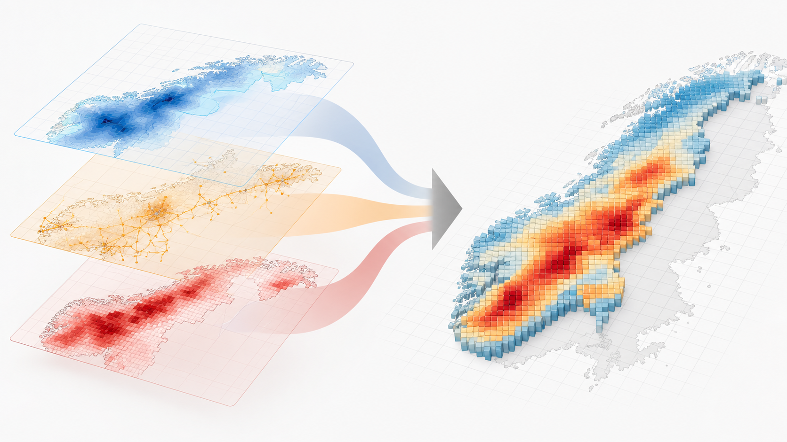
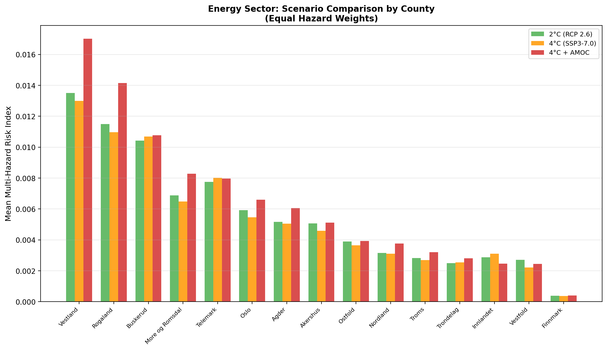
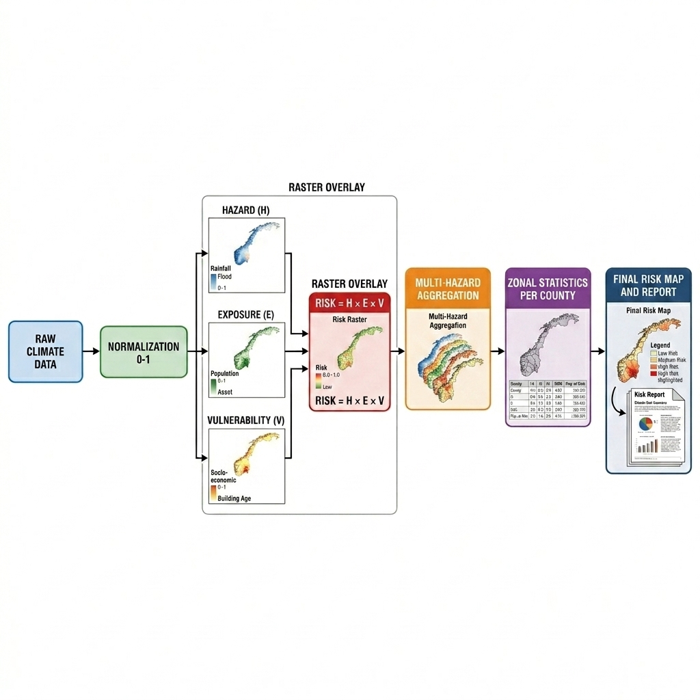
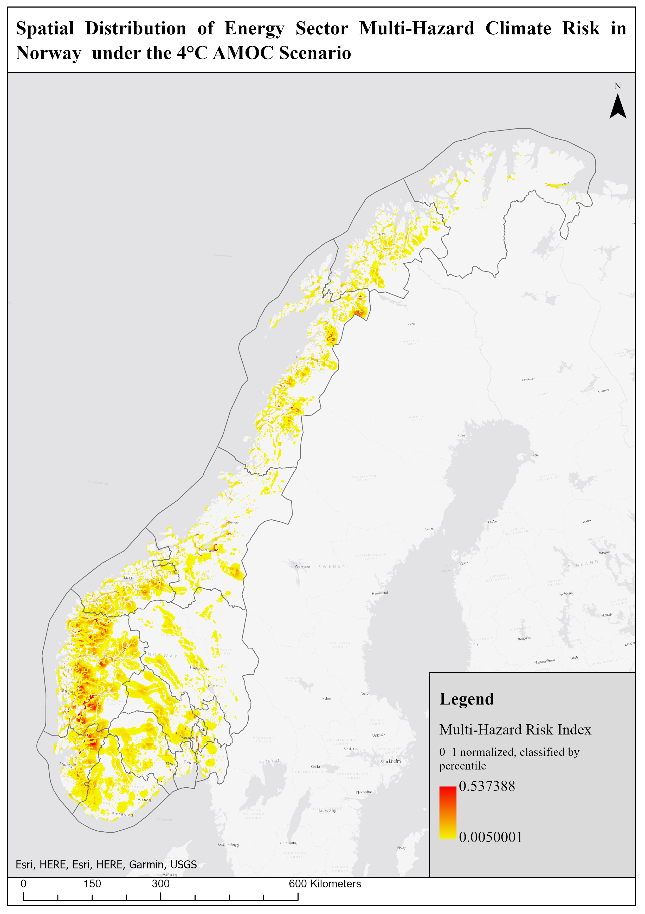
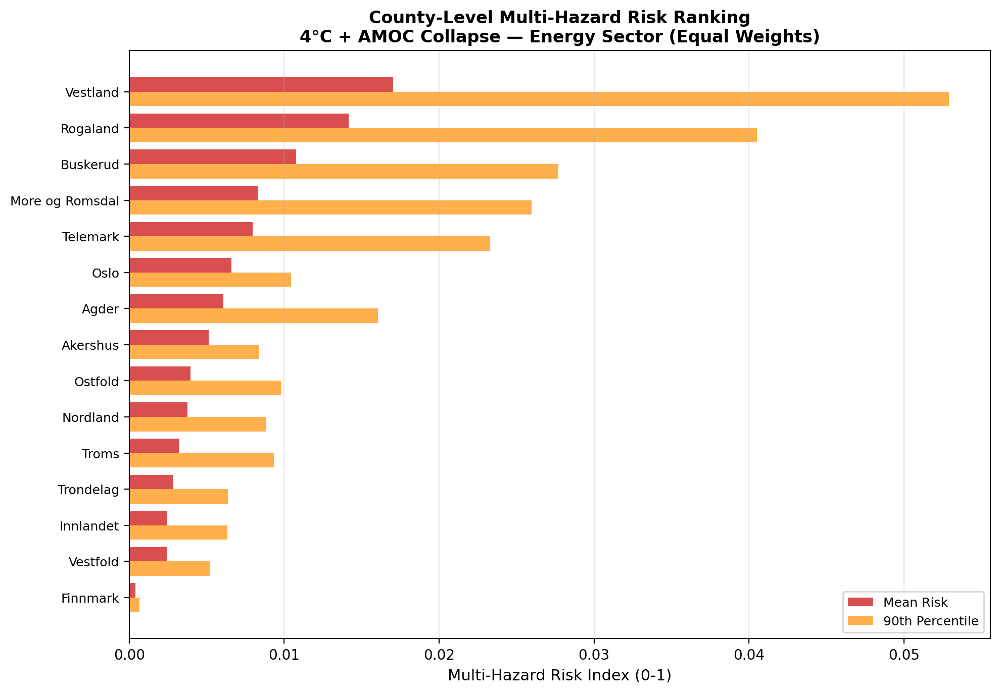

Figure 1: Mean multi-hazard risk index for Norway's energy sector aggregated by county (Fylke) under the 4°C + AMOC collapse scenario at 1 km spatial resolution (ETRS89 / UTM 33N).
Figur 1: Gjennomsnittlig multirisikoindeks for Norges energisektor aggregert på fylkesnivå under 4°C + AMOC-kollapsscenariet med 1 km romlig oppløsning (ETRS89 / UTM 33N).
Project Overview & Objectives
Prosjektoversikt og mål
Climate change poses systemic risks to Norwegian society, physical infrastructure, and vital public services. As an electrified society with extensive coastlines, rugged topography, dispersed settlements, and profound reliance on hydropower, Norway is exposed to complex, compounding climate extremes.
Developed for GEOG3527: GIS Methods for Climate Change at NTNU, this research project establishes a reproducible, national-scale spatial risk assessment. The study translates physical climate projections into actionable geographic intelligence by evaluating how multiple compounding hazards intersect with critical societal sectors, with a primary focus on Norway's national energy infrastructure (power stations, high-voltage transmission lines, and regional transformer substations).
Klimaendringer utgjør en systemisk risiko for det norske samfunnet, vår fysiske infrastruktur og samfunnskritiske funksjoner. Som et høyelektrifisert land med lang kystlinje, krevende topografi, spredt bosetting og stor avhengighet av vannkraft, er Norge særlig sårbart for sammensatte klimahendelser.
Dette forskningsprosjektet, utført innen emnet GEOG3527: GIS-metoder for klimaendringer ved NTNU, etablerer en reproduserbar, nasjonal romlig risikoanalyse. Studien omsetter klimaprojeksjoner til geografisk beslutningsstøtte ved å analysere hvordan sammensatte farekilder påvirker kritiske samfunnssektorer, med særlig fokus på Norges energiinfrastruktur (kraftverk, høyspentlinjer og transformatorstasjoner).
The IPCC Risk Framework
FNs klimapanels (IPCC) risikorammeverk

Figure 2: Operationalization of the IPCC Risk Equation: Risk = Hazard × Exposure × Vulnerability (incorporating Sensitivity and Adaptive Capacity).
Figur 2: Operasjonalisering av IPCCs risikoligning: Risiko = Fare × Eksponering × Sårbarhet (inkludert følsomhet og tilpasningsdyktighet).
The methodological foundation operationalizes the Intergovernmental Panel on Climate Change (IPCC AR5/AR6) risk paradigm:
Risk = Hazard × Exposure × Vulnerability
Where Vulnerability is formulated as: Vulnerability = Sensitivity × (1 − Adaptive Capacity).
Risiko = Fare × Eksponering × Sårbarhet
Hvor sårbarhet beregnes som: Sårbarhet = Følsomhet × (1 − Tilpasningskapasitet).
In this assessment:
- Hazard (H): The physical intensity and likelihood of climate extremes (normalized to 0–1).
- Exposure (E): The geographic footprint and spatial co-location of energy assets (hydropower stations, substations, power corridors).
- Sensitivity: Susceptibility of electrical equipment to specific physical stressors (e.g., flooding of transformer terminals, line ice loading).
- Adaptive Capacity: Grid redundancies, mesh topology, emergency backup systems, and flood protection barriers.
I denne vurderingen inngår:
- Fare / Hazard (H): Den fysiske intensiteten og sannsynligheten for ekstreme værhendelser (normalisert til 0–1).
- Eksponering / Exposure (E): Den geografiske plasseringen og tettheten av energiinstallasjoner (vannkraftverk, transformatorstasjoner, kraftlinjer).
- Følsomhet / Sensitivity: Hvor sårbart utstyret er for spesifikke belastninger (f.eks. vanninntrenging i trafoer, ising på linjer).
- Tilpasningskapasitet / Adaptive Capacity: Nettredundans, maskenettverk, reservesystemer og flombarrierer.
Climate Scenarios & Physical Hazards
Klimascenarier og fysiske farer

Figure 3: Cross-scenario comparison of multi-hazard risk index distributions across the 2°C, 4°C, and 4°C + AMOC collapse warming pathways.
Figur 3: Sammenligning av multirisikoindeksens fordeling på tvers av 2°C, 4°C og 4°C + AMOC-kollapsscenariene.
2°C Warming (RCP 2.6)
2°C Oppvarming (RCP 2.6)
Strong mitigation pathway aligned with the Paris Agreement targets. Modest increases in storm surges and localized precipitation, with relatively manageable strain on grid infrastructure.
Sterkt utslippskuttscenario i tråd med Parisavtalen. Moderate økninger i stormflo og nedbør, med overkommelig belastning på kraftnettet.
4°C Warming (SSP3-7.0)
4°C Oppvarming (SSP3-7.0)
High emissions / limited global mitigation. Dramatic surges in extreme precipitation events (styrtregn), heightened riverine flood frequencies, and intense summer droughts threatening reservoir capacities.
Høye utslipp og begrenset global klimatilpasning. Markant økning i styrtregn, høyere flomfrekvens og sommertørke som truer magasinfyllingen.
4°C + AMOC Collapse
4°C + AMOC-kollaps
A critical tipping-point stress test: global warming coupled with a shutdown of the Atlantic Meridional Overturning Circulation, plunging Scandinavia into severe sub-zero winters, extreme icing, and prolonged cold waves.
Et kritisk vippepunkt-scenario: global oppvarming kombinert med kollaps i Golfstrømmen (AMOC), noe som fører til ekstreme kuldebølger, kraftig ising og massiv økning i oppvarmingsetterspørsel.
Spatial Methodology & ArcPy Pipeline
Romlig metodikk og ArcPy-arbeidsflyt

Figure 4: Automated eight-phase geoprocessing pipeline implemented in ArcGIS Pro using Python (ArcPy).
Figur 4: Automatisert åttefaset geobehandlingsrørledning implementert i ArcGIS Pro med Python (ArcPy).
To guarantee reproducibility across all scenarios, the analysis was executed using an automated ArcPy / Python script architecture in ArcGIS Pro:
- Harmonization & Spatial Reference: All vector layers (NVE grid networks, Kartverket boundaries) and raster hazard data (NCCS Euro-CORDEX downscalings) were aligned to ETRS89 / UTM Zone 33N (EPSG:25833) at a unified 1 km cell resolution.
- Min-Max Normalization: Raw physical values (meters of flood depth, temperature anomaly in °C, storm surge meters) were mathematically rescaled to a dimensionless [0, 1] interval.
- Raster Calculation: Hazard rasters were multiplied cell-by-cell with the exposure and vulnerability layers ($R = H \times E \times V$).
- Multi-Hazard Aggregation: Sector-weighted overlays integrated coastal storm surges, extreme precipitation/flooding, cold waves, and droughts.
- Zonal Statistics: County-level (Fylke) distributions were calculated, outputting mean, maximum, and sum risk indices to validate regional prioritization.
For å sikre full reproduserbarhet på tvers av scenarier, ble analysen kjørt via en automatisert ArcPy / Python-skriptarkitektur i ArcGIS Pro:
- Harmonisering og koordinatsystem: Alle vektorlag (NVE kraftnett, Kartverket grenser) og rasterdata (klimamodeller fra NCCS) ble standardisert til ETRS89 / UTM Sone 33N (EPSG:25833) med 1 km rasteroppløsning.
- Min-Max Normalisering: Råverdier (vannstand, flomdybde, temperaturavvik) ble matematisk skalert til et enhetsløst [0, 1] intervall.
- Rasterkalkulasjon: Farelag ble multiplisert celle-for-celle med eksponerings- og sårbarhetslagene ($R = H \times E \times V$).
- Multirisiko-aggregering: Vektet rasteroverlegg kombinerte stormflo, styrtregn/flom, kuldebølger og tørke.
- Sone-statistikk (Zonal Statistics): Beregnet fylkesvise fordelinger med gjennomsnittlig, maksimal og summert risiko for å prioritere tiltak.
National Continuous Risk Patterns
Nasjonale kontinuerlige risikomønstre

Figure 5: High-resolution continuous raster surface of multi-hazard climate risk for Norway's energy infrastructure under 4°C + AMOC collapse.
Figur 5: Høyoppløselig kontinuerlig rasterkart over multirisiko for Norges energiinfrastruktur under 4°C + AMOC-kollaps.
The continuous 1 km raster analysis reveals extreme spatial heterogeneity:
- Western Fjords & Coastal Margins: The sharpest risk spikes occur where narrow fjord corridors concentrate high-voltage transmission lines directly adjacent to steep flood/debris cones and storm surge zones.
- High-Altitude Hydropower Corridors: Severe icing and sub-zero cold waves threaten mountain reservoirs, penstocks, and transmission lines in high mountain passes (Jotunheimen, Hardangervidda).
Det kontinuerlige 1 km rasterkartet avdekker betydelige geografiske ulikheter:
- Vestlandsfjorder og kystsonen: De høyeste risikotoppene oppstår der trange fjorder samler kraftlinjer i nivåer direkte utsatt for både stormflo, ras og styrtregnflom.
- Høyfjellets vannkraftkorridorer: Ekstrem ising og kulde truer inntaksmagasiner, trykksjakter og overføringslinjer over fjelloverganger (Jotunheimen, Hardangervidda).
Quantitative County Rankings & Key Findings
Kvantitativ fylkesrangering og nøkkelfunn

Figure 6: Norwegian county vulnerability ranking based on mean multi-hazard energy risk index under 4°C + AMOC collapse.
Figur 6: Rangering av norske fylker basert på gjennomsnittlig multirisikoindeks for energisektoren under 4°C + AMOC-kollaps.
1. Vestland (Fylke 46)
1. Vestland (Fylke 46)
Highest mean risk index (0.0170) and highest single-cell maximum (0.475). Dense concentration of hydropower production exposed to compounding storm surges, atmospheric river flooding, and rugged mountain terrain.
Høyeste gjennomsnittlige risiko (0,0170) og høyeste enkeltcelle-topp (0,475). Tett konsentrasjon av vannkraftverk utsatt for samvirkende stormflo, elveflom og rasfarlig terreng.
2. Rogaland
2. Rogaland
Second-highest composite risk (0.0142). Substantial exposure of coastal transformer stations and major energy export interconnectors subject to North Sea surge events and heavy rainfall.
Nest høyest samlet risiko (0,0142). Betydelig eksponering for transformatorstasjoner nær kysten og nøkkelpunkter for krafteksport utsatt for stormflo og nedbørsflom.
3. Buskerud & Inland
3. Buskerud og Innlandet
Third-highest risk (0.0108). Acute susceptibility to river basin flooding (Drammenselva basin) combined with catastrophic cold-wave loads under the AMOC shutdown scenario.
Tredje høyeste risiko (0,0108). Særlig utsatt for vassdragsflom (Drammensvassdraget) i kombinasjon med ekstreme kuldebølger og isbelastning ved AMOC-kollaps.
Infrastructure Adaptation & Risk-Reduction Strategy
Klimatilpasnings- og risikoreduksjonsstrategi
Based on the measured spatial vulnerabilities, four strategic adaptation priorities are recommended for energy grid operators (Statnett, regional DSOs) and municipal spatial planners:
- Targeted Transmission Line Hardening: Re-engineering pylon structural ratings in Vestland and mountain passes to withstand combined mechanical loads of gale-force winds and heavy rime ice accretion.
- Substation Coastal & Flood Defenses: Establishing raised plinths and physical perimeter floodwalls for critical transformer substations located within the 200-year storm surge and river flood zones.
- AMOC Cold-Wave Contingency: Upgrading black-start generator capabilities, de-icing thermal equipment on key interconnectors, and establishing strategic reserve protocols for sub-zero emergency demand.
- Reservoir Multi-Purpose Buffering: Adjusting seasonal dam water-retention rules to maintain buffer capacity against winter rain-on-snow floods while securing water volumes for potential prolonged droughts.
Basert på de målte romlige sårbarhetene, anbefales fire strategiske tilpasningstiltak for nettselskaper (Statnett, netteiere) og kommunale arealplanleggere:
- Målrettet linjeforsterkning: Oppdimensjonering av master og barduner i Vestland og fjelloverganger for å tåle kombinasjonen av ekstremvind og tung islast.
- Flomsikring av transformatorstasjoner: Etablering av hevede fundamenter og vanntette barrierer for stasjoner som ligger innenfor 200-års flom- og stormflosoner.
- Kuldeberedskap for AMOC-scenario: Sikring av svartstart-kapasitet, avisingssystemer på overføringslinjer og beredskapsreserver for ekstreme kuldeperioder.
- Flerbruksstyring av vannmagasiner: Justering av manøvreringsreglementet for å dempe store flomtopper (regn-på-snø) og samtidig opprettholde beredskapsvolum ved tørke.
Tools & Technologies
Verktøy og teknologi
ArcGIS Pro, Python (ArcPy), Spatial Analyst, Zonal Statistics, Matplotlib
Data Sources
Datakilder
NCCS Euro-CORDEX Projections, NVE Energy Grid, Kartverket Basemaps
Spatial Reference
Koordinatsystem
ETRS89 / UTM Zone 33N (EPSG:25833) • 1 km Grid
Academic Context
Faglig kontekst
GEOG3527: GIS Methods for Climate Change • NTNU (2026)
GEOG3527: GIS-metoder for klimaendringer • NTNU (2026)
Back to Portfolio
Tilbake til porteføljen